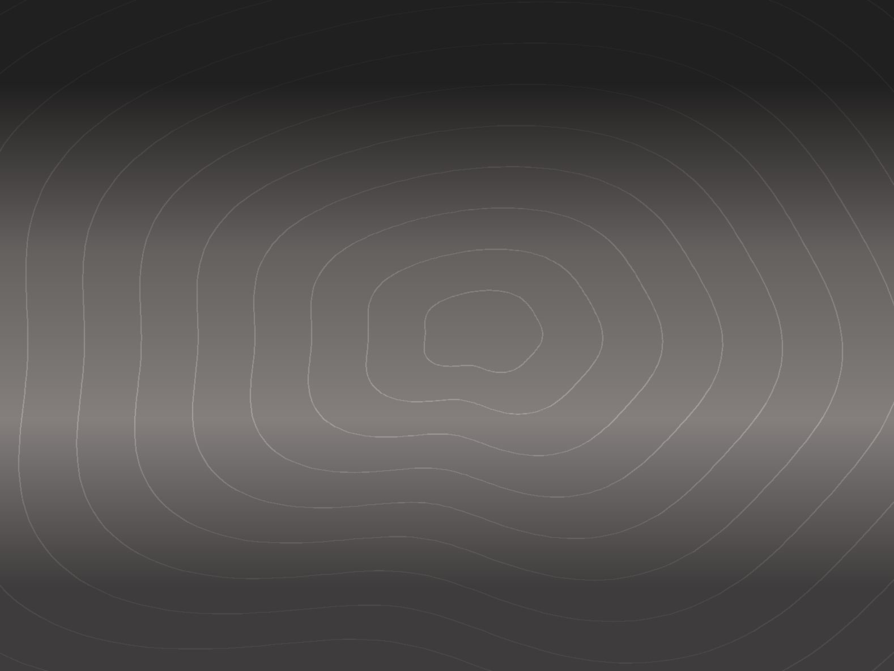
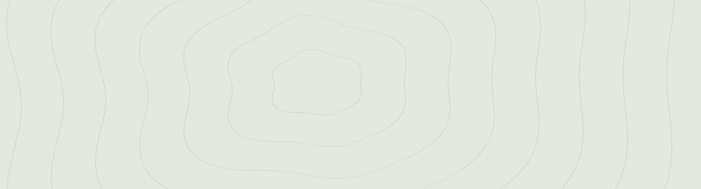
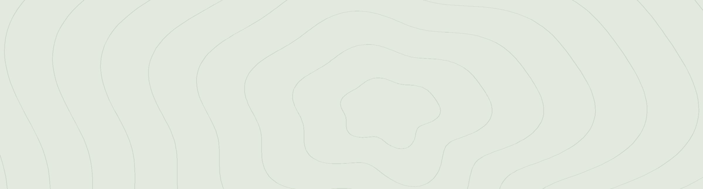
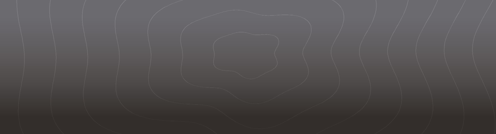

Brand of Neulsoop
도시에서 한 시간, 숲의 속도로 머무는 라이프스타일 스테이 늘숲을 소개합니다.
객실 수
42실
숲을 향해 창을 낸 스탠다드부터 정원이 딸린 스위트까지, 모든 객실이 서로 다른 풍경을 품도록 배치했습니다.
숲 정원
약3,300㎡
건물 사이사이 자리한 정원과 산책로를 투숙객이 언제든 거닐 수 있도록 열어 두었습니다.
산책로
약1.8km
정원과 계곡 쉼터, 북라운지를 한 번에 잇는 순환 산책로가 이어집니다.
라운지 장서
약4,000권
숲과 쉼, 요리와 여행을 주제로 고른 책을 북라운지와 객실에서 자유롭게 읽을 수 있습니다.
숲길로 00
위치 (예시)
스테이 · 라운지
용도
25년 4월
문을 연 날 (샘플)
12,400m²
대지 면적 (샘플)
5,860m²
건축 면적 (샘플)
지하 1층 ~ 지상 4층
규모 (샘플)
Connectivity
늘숲으로 이어지는 길

늘숲은 도심에서 기차로 한 시간 남짓, 역에서 셔틀로 십 분이면 닿는 숲 가장자리에 있습니다. 가까운 기차역과 버스 터미널, 공항 리무진 정류장까지 이어지는 동선을 미리 살펴 두면 체크인까지의 길도 여행의 일부가 됩니다.
Location
숲이 품은 머묾의 조건
숲이 먼저 깨어나는 아침
해가 뜨면 정원과 산책로가 가장 먼저 밝아집니다. 이른 아침 산책을 위해 로비에서 따뜻한 차와 담요를 빌려 드립니다. 해가 높이 뜨기 전, 이슬 맺힌 숲길을 가장 먼저 걸어 보세요.

물소리가 머무는 계곡 쉼터
건물 뒤편 작은 계곡을 따라 나무 데크 쉼터를 두었습니다. 책 한 권 들고 내려가 물소리와 함께 오후를 보내 보세요. 여름에는 발을 담글 수 있도록 얕은 물가 쪽 계단을 열어 둡니다.

계절이 지나가는 정원
봄에는 새순, 여름에는 그늘, 가을에는 낙엽과 열매. 정원사가 계절마다 다른 식물을 심어 같은 길도 늘 새롭게 걷게 합니다. 정원 지도는 체크인 때 함께 드려요.

하루를 정리하는 서재 라운지
밤에는 라운지 조명을 낮추고 음악을 줄입니다. 하루를 정리하며 기록할 수 있도록 노트와 만년필을 준비해 두었습니다. 늦은 밤까지 머물러도 괜찮도록 따뜻한 차를 곁에 둡니다.
Sustainability
숲을 오래 지키기 위한 늘숲의 실천
빗물을 모아 가꾸는 정원
지붕 태양광으로 데우는 온수
일회용품 없는 객실 어메니티